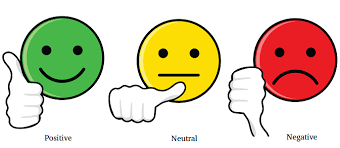

Pramod Nagare
This webpage is for hosting a portfolio of projects to demonstrate the knowledge diversity of author
Home Projects Resume About Me Contact MeProjects
|
GCP Big Data Pipeline 
|
GCP Big-Query: Amazon Customer Reviews Analytics 
|
Employee Retention Tool Kit |
|
Text Image Segment Sorting Automation |
Alex: The Voice Assistant 
|
News Sentiment Analysis with Twitter feeds  |
|
Gun & Knife Object Detection 
|
Hadoop Map Reduce: Amazon Customer Review 
|
AWS Cloud Formation using Shell scripting |